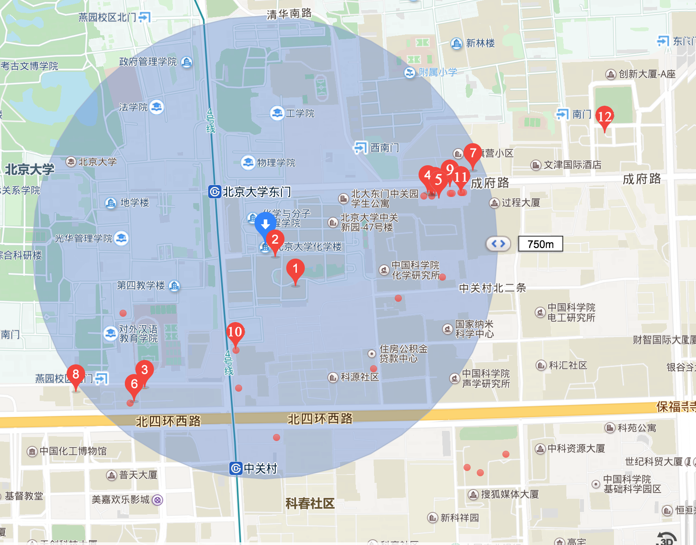

There are some decent hotels nearby the auditorium and the campus of Peking University. Zhongguan Xinyuan Global Village, PKU is the closest to the auditorium. However, the rooms are fully booked. Shaoyuan Guest House is another good option, which is inside the campus of Peking University. The map below shows the path from the auditorium to Shaoyuan Guest House.
Below are some recommended restaurants around PKU. For convenience, they are indicated on the map and listed in the table below.

| No. | English name | Chinese name | Style/Feature |
|---|---|---|---|
| 1 | Heyuan themed restaurant | 和园主题餐厅 | Chinese food, Huaiyang cuisine |
| 2 | Yiyuan themed restaurant | 怡园主题餐厅 | Chinese food |
| 3 | Gudeyi | 谷得一乡土菜 | Chinese food, Shaanxi cuisine |
| 4 | Wufangyuan | 五方院五道口店 | Chinese food, Hunan cuisine |
| 5 | Lashangyin | 辣尚瘾（五道口店） | Chinese food, Sichuan cuisine |
| 6 | Yuzhou | 渝州家厨（中关村） | Chinese food, Sichuan cuisine |
| 7 | café heaven | 咖啡天堂 | Korean food, Coffee |
| 8 | Shiwei | 十未潮汕砂锅粥 | Chinese food, Cantonese cuisine |
| 9 | Lakers | Lakers | Western food, Pizza |
| 10 | Qingfeng Streamed Stuffed bun Restaurant (Zhongguancun) | 庆丰包子铺（中关村） | Chinese food, Baozi |
| 11 | Qingfeng Streamed Stuffed bun Restaurant (Lanqiying) | 庆丰包子铺（蓝旗营） | Chinese food, Baozi |
| 12 | Quanjude Peking Roast Duck | 全聚德 | Chinese food，Peking duck |
Peking university (PKU) itself is a popular travel spot in Beijing. You can take a walk around the campus during the symposium. Most spots are in the northern part of the campus. A unofficial map of the campus can be downloaded here.
Weiming ("Unnamed") Lake and Boya Pagoda are landmarks of PKU. The campus is also filled with delicate antique structures, which can be traced to Qing Dynasty. For now some of these ancient buildings are used as office locations, such as the South & North Pavilions. Please visit heritages of PKU for more information.
{kind=link}